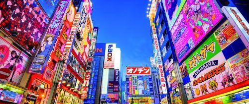
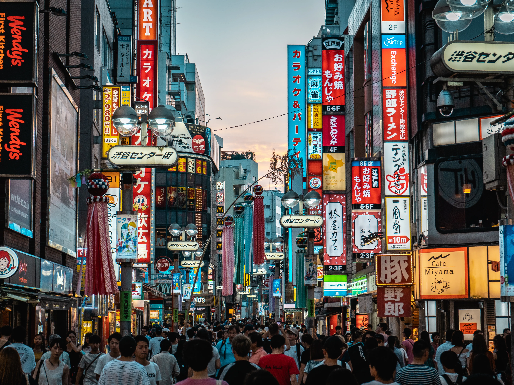
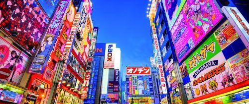
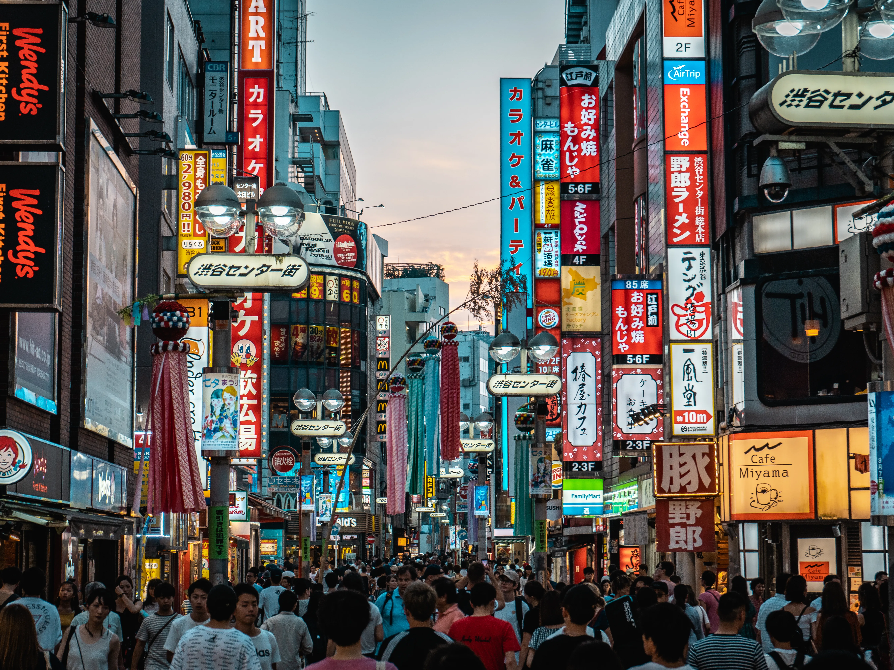

Tokyo is one of the largest cities in the world, with a population
exceeding 37 million in its metropolitan area.
Tokyo’s public transportation system is one of the most efficient
and extensive in the world. The Tokyo Metro and train lines serve
millions of passengers daily, and the punctuality of the trains is
legendary.
Tokyo Skytree, standing at 634 meters (2,080 feet), is the tallest
tower in Japan and the second tallest structure in the world. It
offers stunning panoramic views of the city and beyond.
Tokyo holds the record for the most Michelin-starred restaurants of
any city in the world, offering a wide range of dining options from
street food to luxury fine dining.
Tokyo is famous for blending traditional culture with modern
innovation. You can visit serene temples, shrines, and traditional
gardens, then step into vibrant shopping districts like Shibuya and
Harajuku, where you’ll find cutting-edge fashion, technology, and
entertainment.


 


